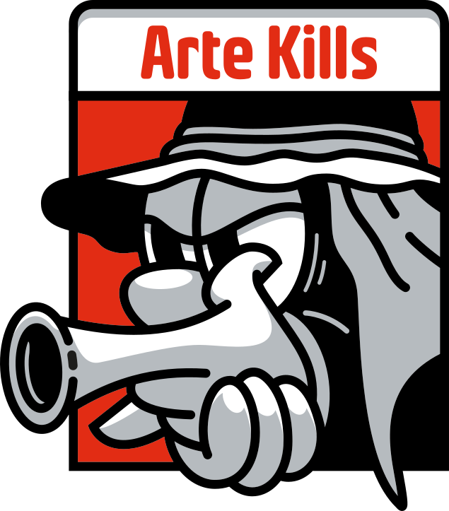

Administración Modo local Ver la web ↗Para publicar cambios hace falta una clave de GitHub (token) con permiso para escribir en el repositorio de la web. Se guarda sólo en este navegador.
alvarocabrero/MusicPage.Si tu cuenta no es la dueña del repositorio (sólo colaboradora), crea en su lugar una clave clásica con el permiso public_repo.